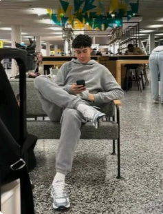

"Donat Annasywa punya tekstur lembut banget, rasa manisnya pas. Setiap gigitan bikin nagih!"
— Rafael Struick

"Saya suka banget! Tidak terlalu manis, tapi tetap gurih dan lembut. Cocok buat teman kopi sore!"
— Welber de Halim Jardim

"Donat Annasywa beda dari yang lain. Anak-anak di rumah juga suka banget!"